Audit Overview
What we analyzed and key areas of opportunity
We conducted a comprehensive review of urbanplatter.com across 4 dimensions: Performance & Speed, UX & Conversion Design, Technology & App Stack, and SEO Fundamentals. We benchmarked Urban Platter against 4 leading Food & Beverage brands — Vahdam, Blue Tokai, Sleepy Owl, and Slurrp Farm — to identify gaps and opportunities.
Confidential — Prepared for Urban Platter by Growisto | March 2026
Traffic Analytics
Visitor behavior and traffic sources
SimilarWeb Data Not Available — Detailed traffic analytics (visits, bounce rate, pages/visit, session duration, traffic sources, device split) require SimilarWeb Pro access, which returned limited data for this domain. We recommend reviewing your GA4 dashboard for accurate traffic metrics. Once you share GA4 access, we'll provide a full funnel analysis in the next phase.
While SimilarWeb data is unavailable for this report, our analysis of the site's technology stack confirms GA4 and GTM are installed. Based on the product catalog (800+ SKUs), review volume (Judge.me reviews visible on multiple products), and presence of multiple marketing pixels (Facebook, Clarity), Urban Platter appears to be a Tier 2-3 store with meaningful traffic volume. A full funnel analysis with GA4 access will quantify exact conversion opportunities.
Confidential — Prepared for Urban Platter by Growisto | March 2026
The Conversion Question
Where visitors drop off in the purchase funnel
| Funnel Stage | Urban Platter | Industry Benchmark (P50) |
|---|---|---|
| PDP View Rate | ? | 89.6% |
| Add to Cart Rate | ? | 11.95% |
| Cart → Checkout Rate | ? | 29.8% |
| Ecommerce Conversion Rate | ? | 2.05% |
Unlock Your Full Funnel Analysis
With GA4 access, we can map your exact funnel — from landing page to purchase — and quantify exactly how much revenue each drop-off point is costing you. Food & Beverage brands we've worked with typically see 20-40% conversion uplift after addressing funnel gaps. The benchmarks above are from our analysis of 36 e-commerce brands.
Confidential — Prepared for Urban Platter by Growisto | March 2026
Performance Benchmarks
How Urban Platter stacks up against competitors
| Brand | Mobile Score | Desktop Score | LCP | CLS | TBT |
|---|---|---|---|---|---|
| Urban Platter | 61 | 14 | 1.0s | 0.059 | 2,320ms |
| Vahdam | 52 | 83 | — | — | — |
| Blue Tokai | 34 | 71 | — | — | — |
| Sleepy Owl | 54 | 86 | — | — | — |
| Slurrp Farm | 94 | 91 | — | — | — |
Critical finding: Desktop PageSpeed is 14/100 — the lowest in the competitive set by a wide margin. While Urban Platter's mobile score (61) is competitive, the desktop experience is severely impacted by a TBT of 2,320ms (target: <200ms), meaning the page freezes for over 2 seconds during load. This is primarily caused by heavy third-party scripts (Goaffpro, Quinn video, multiple tracking pixels). Every competitor outperforms Urban Platter on desktop — Slurrp Farm leads at 91/100.
Confidential — Prepared for Urban Platter by Growisto | March 2026
Core Web Vitals
Google's key metrics for user experience
Urban Platter passes 3 of 4 measurable Core Web Vitals. The critical failure is Total Blocking Time (2,320ms) — over 11x the recommended threshold. This means the main thread is blocked for 2.3 seconds during page load, causing the page to feel frozen. Users cannot interact with buttons, links, or forms during this time. The primary culprits are heavy third-party scripts: Goaffpro affiliate tracking, Quinn video widget, and multiple analytics pixels loading synchronously.
Confidential — Prepared for Urban Platter by Growisto | March 2026
UX & Conversion Findings
Page-by-page opportunities to increase conversions
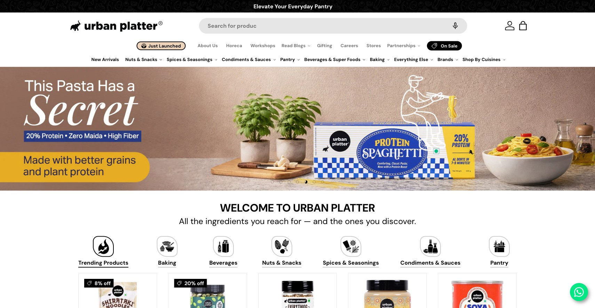

- Urban Platter's homepage has no visible trust indicators (certifications, quality badges, shipping promises) in the hero or first fold area
- First-time visitors see product banners but no reason to trust the brand — no "100% Natural", "FSSAI Certified", or "Free Shipping" badges
- 7 out of 10 top Food & Bev brands display USP icons prominently on the homepage
- Add a USP icon strip below the hero banner: "100% Natural", "FSSAI Certified", "800+ Products", "Free Shipping Over ₹499"
- Use simple iconography with short text — visible without scrolling on both mobile and desktop
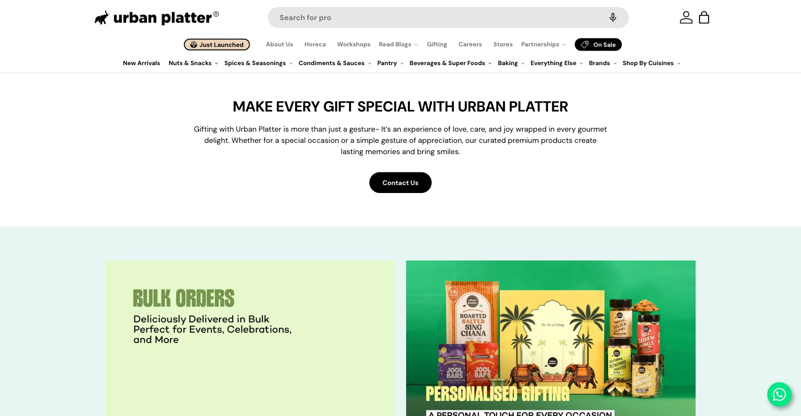
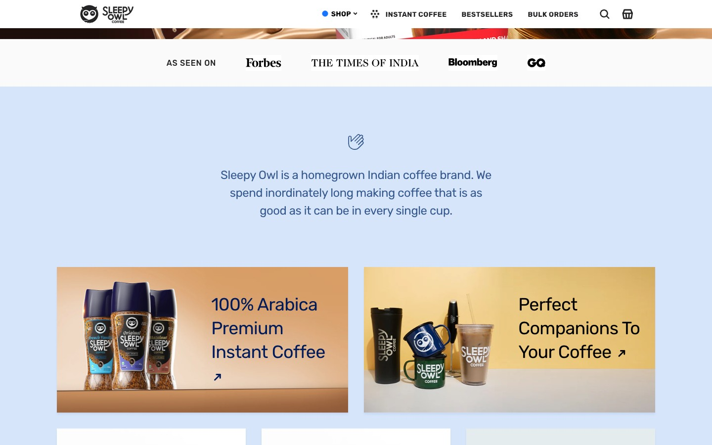
- No customer testimonial carousel or review highlights anywhere on the homepage — despite having Judge.me reviews on PDPs
- No press/media mentions section (brands like Sleepy Owl showcase logos from Vogue, Economic Times, etc.)
- Missing "As Featured In" or "Trusted By" section that can instantly communicate brand authority
- Add a "What Our Customers Say" carousel pulling top-rated Judge.me reviews (already have the data)
- Add a press/media logo strip if Urban Platter has been featured in any publications
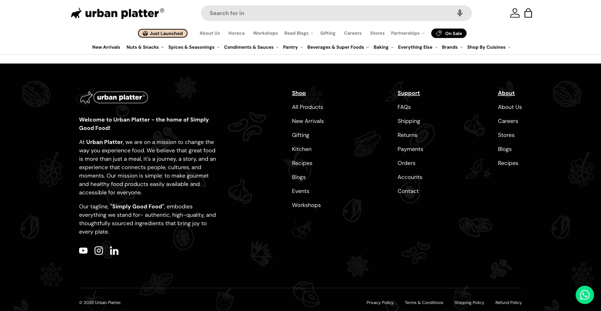

- No newsletter signup form visible on the homepage — neither in the body content nor the footer area
- No exit-intent popup or email capture mechanism was triggered during our testing (loaded in incognito, waited 30+ seconds, scrolled, simulated exit intent)
- For a consumable product like food, email is a critical repeat purchase driver — brands like Olipop use prominent homepage signup with incentives
- Add a newsletter section above the footer with a compelling incentive ("Get 10% off your first order")
- Consider a timed or exit-intent popup with an email capture offer — time it after 15-20 seconds, not immediately
- The homepage has an H1 tag in the HTML but it contains no text — Google sees an empty primary heading
- H1 is the most important on-page SEO signal — an empty H1 tells search engines the page has no defined topic
- This directly impacts ranking potential for branded and category keywords
- Add a descriptive, keyword-rich H1 to the homepage: e.g., "Premium Imported Foods, Spices & Superfoods — Urban Platter"
- Ensure every key page (collection, PDP) also has a unique, non-empty H1 tag
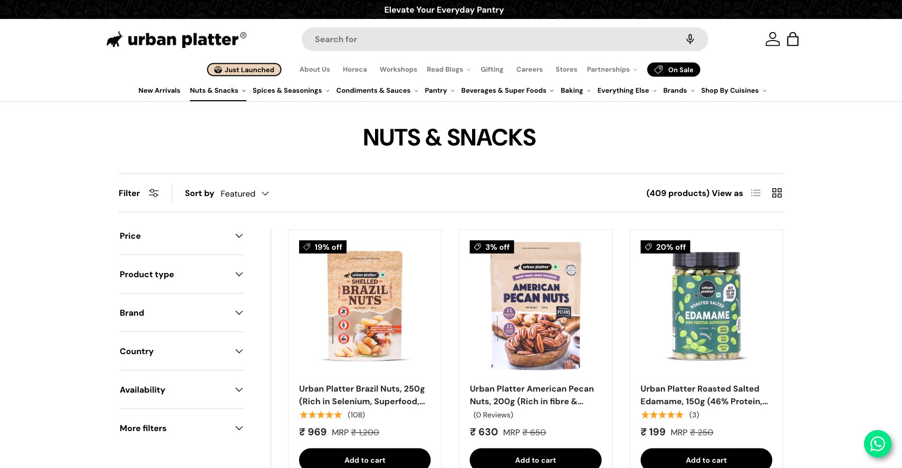
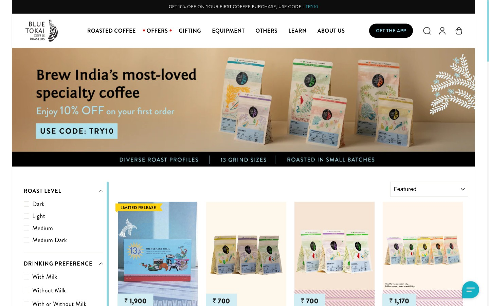
- No breadcrumb trail on collection pages — users have no visual path showing where they are in the site hierarchy
- With 800+ SKUs across many categories, breadcrumbs are essential for navigation and reducing "lost" feeling
- Breadcrumb schema markup is also missing — a direct SEO enhancement that helps Google understand site structure
- Add breadcrumb navigation to all collection and product pages: Home > Category > Sub-Category
- Implement BreadcrumbList schema (JSON-LD) alongside the visual breadcrumbs for SEO benefit
- Product cards on collection pages show only the product image, title, and price — no variant indicators (size, weight, flavor)
- Many Urban Platter products come in multiple sizes (100g, 250g, 500g, 1kg) — shoppers must click into each PDP to see available sizes
- This creates unnecessary friction and extra clicks, especially on mobile where back-navigation is slower
- Add weight/size variant selectors directly on collection page product cards
- Show price range (₹199 - ₹599) on cards with multiple variants so shoppers know the options at a glance
- Collection pages load all products at once (65+ on some categories) with no pagination, infinite scroll, or "Load More" button
- This contributes to slow page performance — each product card loads images, pricing, and markup
- Users face choice paralysis with too many options displayed simultaneously
- Implement pagination or "Load More" with 24-36 products per page
- Add robust filtering (by type, price, dietary preference) to help users narrow from 800+ SKUs


- On mobile, once the user scrolls past the ATC button area, there is no sticky bar to add the product — the user must scroll back up to buy
- Urban Platter PDPs are long (reviews, description, related products) — on mobile, the ATC button is out of view for most of the browsing session
- 5 out of 10 top Food & Bev brands use sticky ATC bars on mobile, and this is a growing pattern
- Add a sticky bottom bar on mobile PDPs showing: product name, price, and "Add to Cart" button
- Include variant selector in the sticky bar if the product has size/weight options
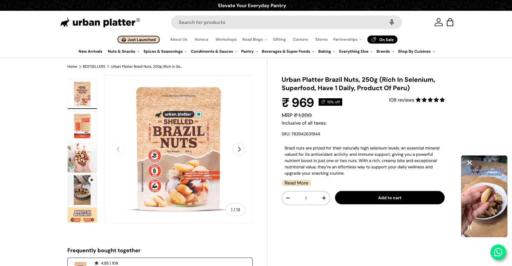
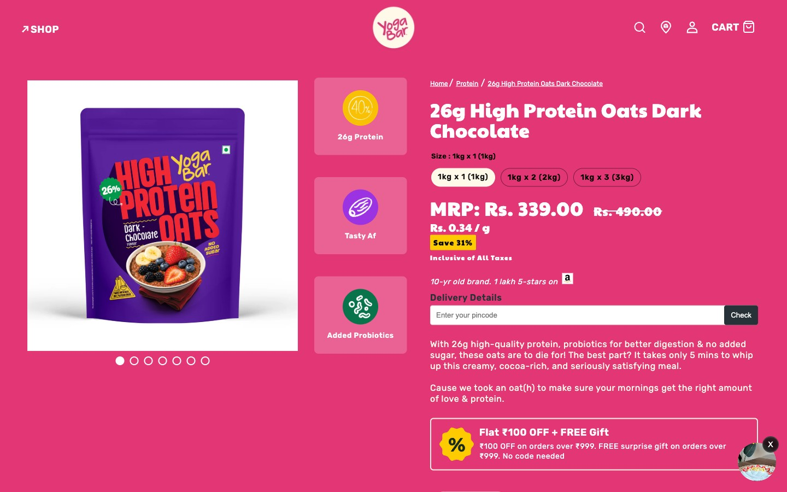
- The PDP ATC area has no trust indicators — no shipping promise, no return policy, no secure checkout badge
- Yogabar and other competitors display "Free Shipping", "Easy Returns", and certification badges directly below the ATC button
- Trust badges at the purchase decision point can reduce cart abandonment by 5-10%
- Add 3-4 trust icons below the ATC button: "100% Authentic", "Fast Delivery", "Easy Returns", "Secure Payment"
- Include FSSAI certification badge and any quality certifications Urban Platter holds
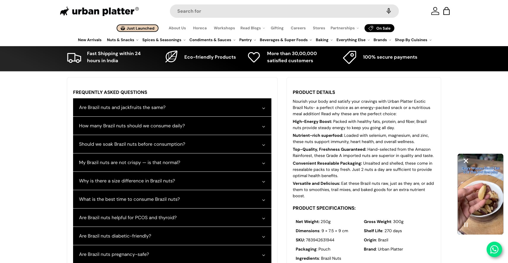
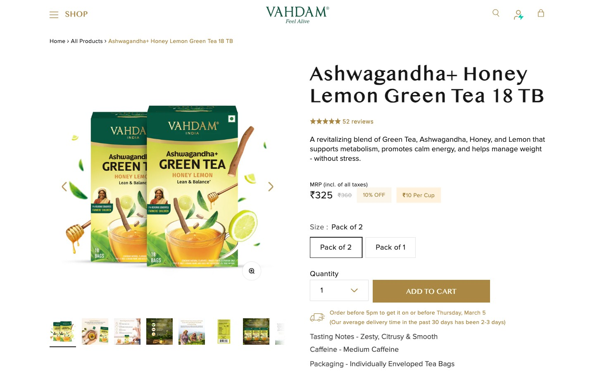
- No pincode checker or estimated delivery date on the PDP — shoppers don't know when they'll receive the product before adding to cart
- For food products (especially perishable or imported items), delivery timeline is a key purchase consideration
- Indian shoppers are conditioned by Amazon/Flipkart to expect delivery date visibility — its absence creates friction
- Add a pincode-based delivery estimation widget on the PDP showing "Delivers to [city] by [date]"
- Apps like ETA Shipping or custom Shopify integrations can connect with your shipping partner APIs
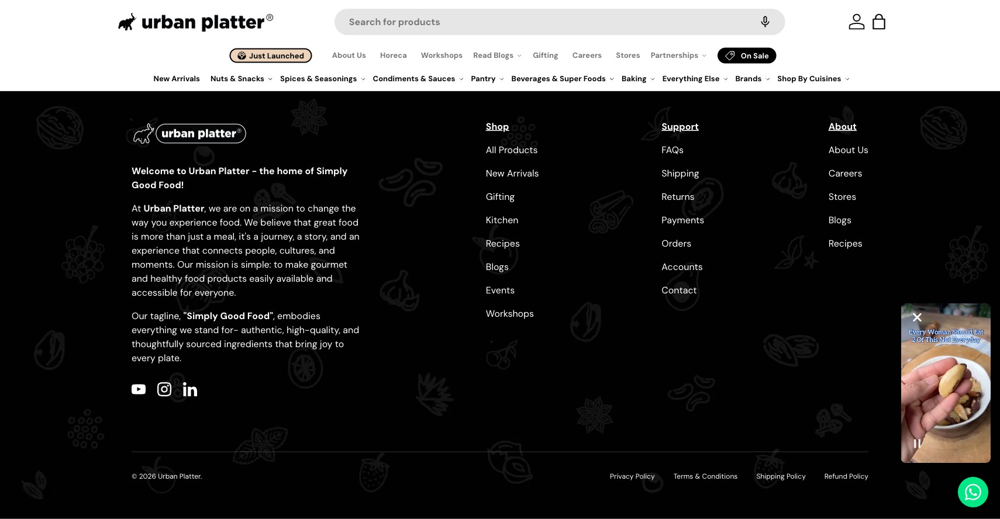

- Product descriptions exist but lack structured nutritional information tables — key for health-conscious shoppers
- Urban Platter sells superfoods, nuts, exotic ingredients — buyers specifically look for nutritional data before purchasing
- Olipop and other leading food brands display nutrition facts in a clean, visual table format directly on the PDP
- Add structured nutrition facts tables to applicable PDPs using a tabbed or accordion layout
- Include per-serving and per-100g values, allergen warnings, and ingredient lists in a standardized format
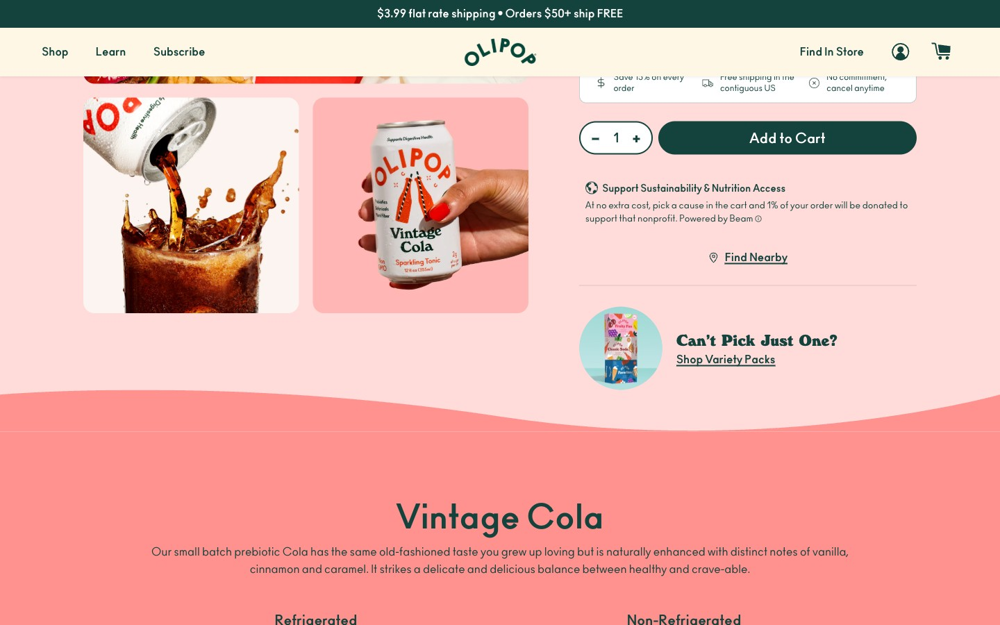
- No "Subscribe & Save" option on any PDP — all purchases are one-time only
- Urban Platter sells consumable products (nuts, spices, superfoods) that are naturally replenished — ideal for subscription
- 5 out of 10 top Food & Bev brands offer subscription, and this is a growing pattern with significant LTV impact
- Implement a "Subscribe & Save" option on eligible PDPs with 10-15% discount for subscribers
- Start with top-selling staples (nuts, dried fruits, seasonings) and expand based on adoption
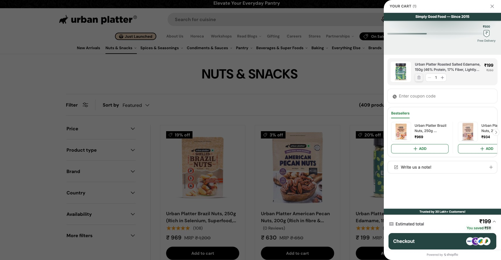
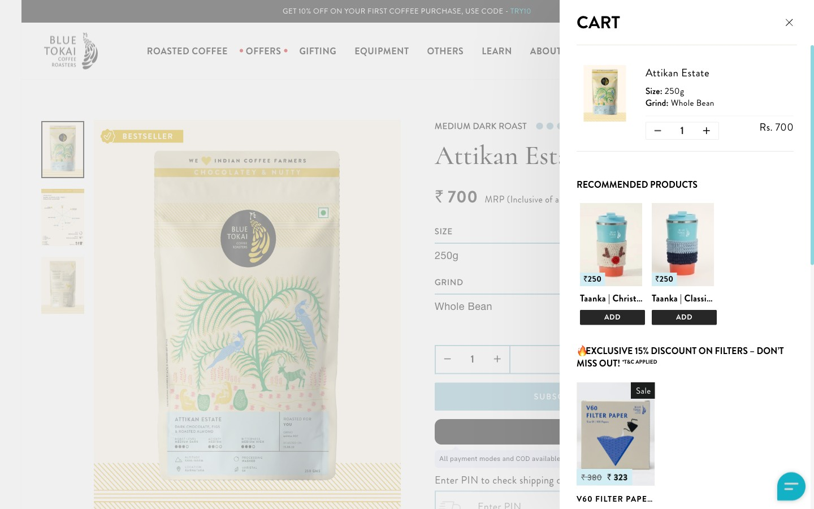
- The cart drawer (powered by Shopflo) has a single "Checkout" button but no express checkout options (GPay, UPI, Shop Pay)
- Indian shoppers increasingly prefer UPI-based instant checkout — not offering it adds friction
- Express checkout buttons in the cart can skip the address/payment form entirely for returning customers
- Enable dynamic checkout buttons (GPay, Shop Pay) in the cart drawer alongside the main Checkout CTA
- Ensure Shopflo checkout integration supports UPI as a primary payment method

- The cart drawer has a basic cross-sell section (powered by Rebuy) but it shows generic "You may also like" products rather than contextual complements
- Cross-sell is present but under-optimized — not using "Frequently Bought Together" or "Complete the Recipe" framing
- Vahdam's cart upsell uses contextual framing ("Goes well with your tea") which drives higher add-on rates
- Configure Rebuy with product-specific complementary suggestions (e.g., if nuts → suggest trail mixes, if spices → suggest recipe kits)
- Add a free shipping progress bar ("Add ₹149 more for free shipping") to incentivize cart additions
- No payment method icons (Visa, Mastercard, UPI, RuPay), no security badges, and no policy reassurance in the cart drawer
- The cart is the last step before checkout — shoppers who see accepted payment icons and "Secure Checkout" feel more confident
- Add a row of accepted payment icons below the checkout button: Visa, Mastercard, UPI, RuPay, Net Banking
- Add a "Secure Checkout" text with lock icon near the checkout CTA
- Cart drawer shows subtotal and checkout button but no estimated delivery date or shipping timeline
- For food products, delivery speed matters — shoppers want to know if items arrive fresh and on time
- Not knowing delivery timeline at cart stage is a top reason for abandonment in Indian e-commerce
- Show estimated delivery date or range in the cart drawer: "Estimated delivery: Mar 16-18"
- If pincode is known (from PDP check or previous order), auto-populate the delivery estimate
Technology Assessment
Platform, theme, and architecture insights
Platform
Shopify
Standard Shopify plan. Well-established store with 800+ products and robust category structure.
Theme
Custom / Proprietary Theme
Not a standard Shopify theme store theme. Custom-built by their agency. Theme lacks some modern features (sticky ATC, breadcrumbs, variant swatches on cards).
Analytics
GTM + GA4 + FB Pixel + Clarity
Good analytics foundation. Google Tag Manager installed with GA4, Facebook Pixel, and Microsoft Clarity. GA4 ecommerce event status needs verification with access.
Technology Narrative
Urban Platter runs on Shopify with a custom-built theme that handles the basics well (product display, cart drawer via Shopflo, search) but lacks modern conversion-focused features found in premium Shopify themes. The Desktop PageSpeed score of 14/100 is a critical red flag — driven primarily by heavy third-party script loading (Goaffpro affiliate tracking loads twice, Quinn video widget, multiple analytics pixels firing synchronously). We detected 131+ JavaScript errors on scroll (TypeError in PDP scripts) and a suspicious ngrok webhook in the codebase, suggesting development artifacts left in production. The analytics stack (GTM + GA4 + Clarity + FB Pixel) is solid in terms of tool selection, but needs verification of GA4 ecommerce event firing for proper funnel tracking.
Confidential — Prepared for Urban Platter by Growisto | March 2026
App Ecosystem
What's installed vs what's missing from best-in-class Food & Beverages stores
Present
Missing
Confidential — Prepared for Urban Platter by Growisto | March 2026